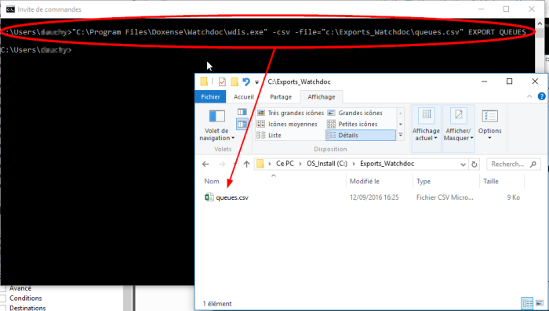

Modes d'utilisation de WDIS
Vous pouvez utiliser l'outil WDIS pour générer un export ponctuellement à l'aide d'une invite de commande.
Vous pouvez aussi concevoir une tâche permettant d'automatiser la génération des exports selon une fréquence prédéfinie (fichier de batch).
Lancer une commande WDIS
L'outil WDIS est enregistré sur le serveur hébergeant le kernel En anglais, Kernel signifie "noyau". Dans nos documents, il désigne le service de Watchdoc chargé de la gestion des impressions hors Site web. (par défaut : C:\Program Files\Doxense\Watchdoc).
En anglais, Kernel signifie "noyau". Dans nos documents, il désigne le service de Watchdoc chargé de la gestion des impressions hors Site web. (par défaut : C:\Program Files\Doxense\Watchdoc).
Pour générer des exports à l'aide de wdis.exe :
-
vérifiez le chemin d'accès à l'exécutable wdis.exe ;
-
lancez une invite de commande ;
-
dans l'outil de commande, indiquez le chemin permettant l'accès à l'exécutable wdis.exe ;
-
lancez les commandes d'export en respectant la syntaxe et en utilisant les arguments et valeurs précisées ci-après :

Concevoir des commandes WDIS
Syntaxe
La syntaxe à respecter est la suivante :
WDIS.EXE [OPTIONS] EXPORT EXPORTID
Les paramètres sont précédés d'un barre de fraction / et suivis par signe égal = qui introduit la valeur.
La commande est composée d'un modèle de données (template) précisé par l'argument EXPORTID.
Ce modèle de données peut être exporté tel quel ou peut être affiné à l'aide d'arguments optionnels.
Paramètres
EXPORTID
Obligatoire, ce paramètre permet de sélectionner un modèle de données (template).
-
Server : informations sur l’état du serveur d’impression ;
-
Jobs : historique des impressions ;
-
Failures : historique des incidents ;
-
Transactions : historiques des transactions de paiement ;
-
Queues : état des files ;
-
Users : relevé par utilisateurs ;
-
Roles : relevé par rôles ;
-
Codes : relevé par codes dynamiques ;
-
Stations : relevé d’impression par stations de travail ;
-
Formats : relevé sur les formats papier utilisés ;
-
Status : relevé des états des moyens d’impression ;
-
Supplies : consommables bientôt vides (par défaut <20) ;
-
Availability : disponibilité des moyens d’impressions ;
-
HardwareCounters : relevé compteur par moyens d’impression.
[OPTIONS]
Non obligatoires, ces arguments permettent de préciser le périmètre des données exploitées et leurs modalités d'export :
-
Format
-
csv : génère un fichier d'export au format CSV ;
-
xml : génère un fichier d'export au format XML ;
-
excel : génère un fichier d'export au format MS Excel®.
-
Media
-
mail : précise l'adresse e-mail à laquelle est envoyé le rapport ;
-
file : permet de sauvegarder le résultat dans un fichier spécifié (préciser le chemin complet avec le nom du fichier) ;
-
-
Période
-
from : précise la date de début de l'export (à utiliser avec 'to') ;
-
to : précise la date de fin de l'export (à utiliser avec 'from') ;
-
period : précise une période d'export (exemple : lastmonth/thismonth/thisyear/-24h). Ne peut pas être utilisé avec 'from' ou 'to' ;
-
range : temps par rapport à la période (à utiliser avec period) ;
-
-
Localisation des données à exploiter
-
server : précise l'adresse du serveur Watchdoc dont WDIS doit exploiter les données (dans le cas d'une installation en cluster ou en Master).
-
site : précise l'adresse du site dont WDIS doit exploiter les données ;
-
group : précise l'identifiant du groupe d’imprimantes dont WDIS doit exploiter les données ;
-
queue : précise l'identifiant de files d’imprimantes dont WDIS doit exploiter les données ;
-
role : précise l'identifiant de rôles dont WDIS doit exploiter les données ;
-
station : précise l'identifiant d'un poste de travail spécifique dont WDIS doit exploiter les données ;
-
smtp : permet de préciser les caractéristiques d'un serveur SMTP à utiliser pour envoyer par mail le rapport généré. Par défaut, WDIS utilise les paramètres SMTP configurés dans Watchdoc ;
-
level : précise, en pourcentage, un seuil en-deçà duquel Watcdhoc® informe que les consommables sont bientôt vides. Par défaut, ce seuil est à 20%.
-
Valeurs du paramètre Period
Les valeurs possibles pour le paramètre period sont les suivantes :
| Période courante | today thisweek thismonth thisyear |
Sélectionne la période spécifiée en cours. Ex. : /period=thisweek : données depuis le lundi de la semaine où la commande est exécutée, jusqu'au moment présent. |
| Période précédente | yesterday lastweek lastmonth lastyear |
Sélectionne l'ensemble de la période précédente. Ex. : /period=lastmonth : exécutée au mois d'août, sélectionne les données du 1er au 31 juillet de la même année. |
| Période glissante | -<nombre>[hdwmy] |
Sélectionne une période glissante en fonction de la durée spécifiée : h : hour/heure d : day/jour w : week/semaine m : month/mois y : year/année Ex. : /period=-48h : données des dernières 48 h. |
| alternative à la période glissante | range |
il est possible d'ajouter last au paramètre period, puis d'ajouter un paramètre range pour préciser la durée. Ex. : /period=last /range=2m : données des 2 mois précédant la date d'exécution. |
| Mois ou année spécifique |
YYYYMM
YYYY |
Sélectionne les données du mois MM de l'année YYYY. Ex. : /period=201508 : données du 1er au 31 août 2015. Sélectionne les données du 1er janvier au 31 décembre de l'année YYYY. |
Créer une tâche automatique d'export
Pour automatiser la génération d'exports à l'aide de WDIS :
-
ouvrez un fichier texte (à l'aide d'une application de type bloc-note) ;
-
dans ce fichier, listez le commandes d'export que vous souhaitez automatiser (en respectant la syntaxe et en utilisant les arguments et valeurs précisées ci-dessous) ;
-
enregistrez le fichier texte dans le dossier C:\Program Files\Doxense\Watchdoc en lui attribuant l'extension .bat ;
-
sous MSWindows®, créez une tâche planifiée exécutant le fichier batch enregistré :
-
Windows 2008 R2 : https://technet.microsoft.com/fr-fr/library/cc725745.aspx
-
Windows 2012 : https://technet.microsoft.com/fr-fr/library/aa570151.aspx
-